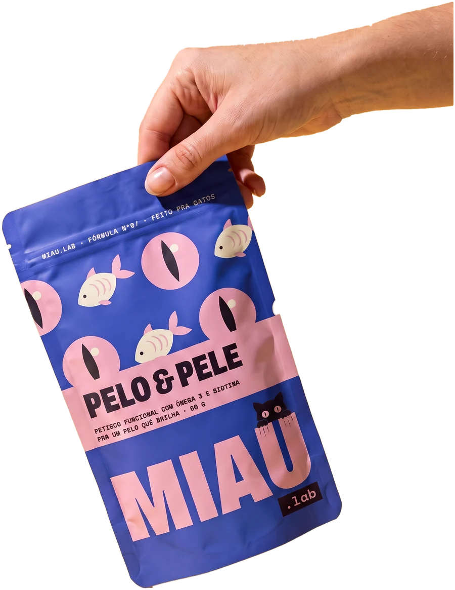
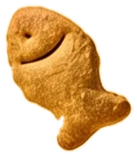
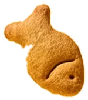
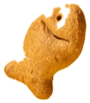
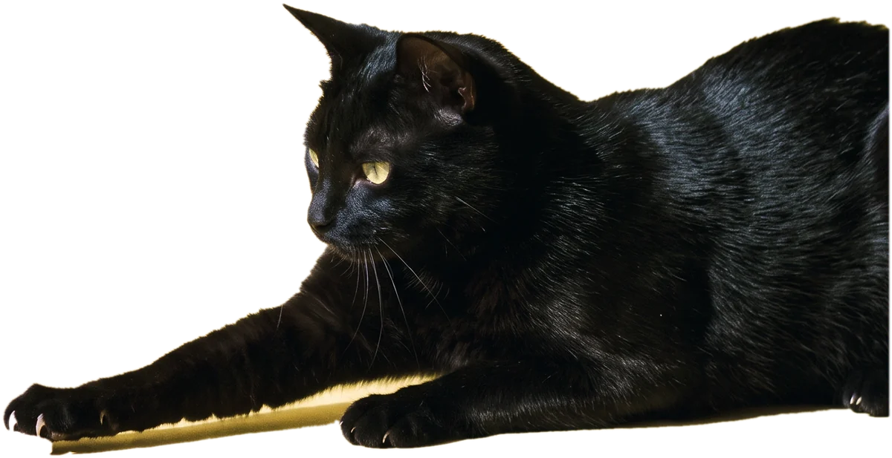
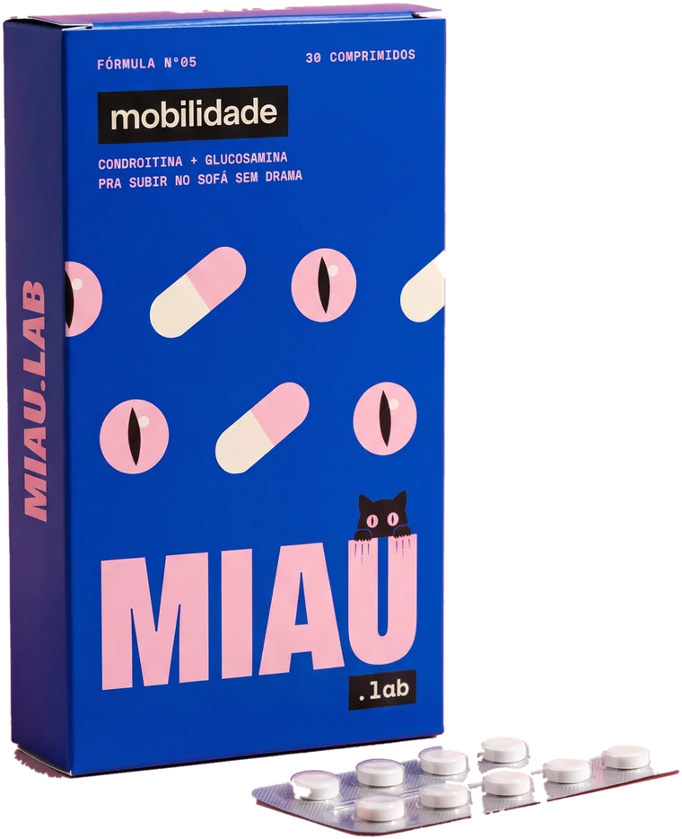
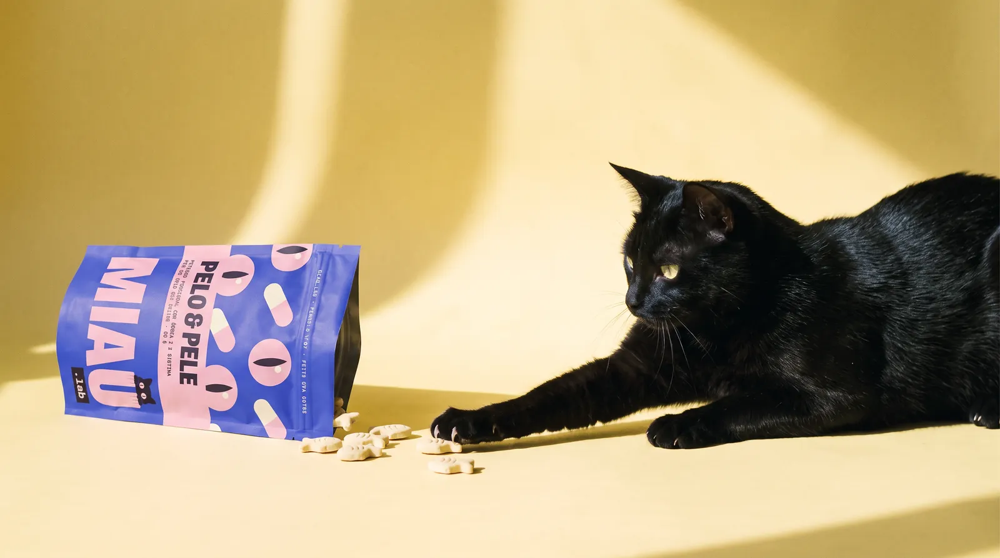

Nº01 · petisco funcional
Pelo & pele
Ômega 3 e biotina, pra um pelo que brilha no sol da janela.
Fórmula veterinária, feita pra gatos. Pelo & pele com ômega 3 e biotina.

role ↓



Ômega 3 e biotina, pra um pelo que brilha no sol da janela.

Fibra e malte, pra bola de pelo sair sem drama.

Menta e zinco, pro hálito de gato feliz.
Condroitina e glucosamina em comprimido. Nº05, mobilidade.

